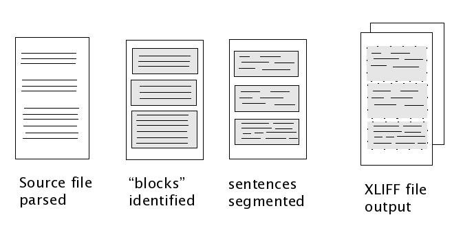

This article is being written to serve as a short introduction to the XLIFF Filters, released as part of the Open Language Tools. It describes what the filters are, why they're needed and describes a little of what they do behind the scenes.
XLIFF is a standard file format that aims to hide the complexity of source file formats from translators and tools providers, and allows us to carry information about the various steps that in localisation processes as part of the file that's being translated.
For example, rather than needing to maintain a separate log file or spreadsheet with information about the wordcount of a file, notes from translators or information about the original context of the source file, with XLIFF, all of this information is carried inside the file itself. This has a number of advantages, but in particular, it means that people processing these files are always going to have the most up-to-date information about the file, whatever stage it's at in the localisation process.
Another advantage is, that once we have a standard file format, translation tools can be written that only need to process XLIFF files - as soon as your source file has been converted to XLIFF, other tools further down the localisation process-chain do not need to be aware of any details about the source file format.
The problem is, that so far, there aren't many freely available XLIFF filters around, so translators have not had the choice of using many different translation tools.
The Open Language Tools project aims to provide a set of XLIFF filters for a number of common source file formats, so that others can work on translation tools to further enhance translator productivity which work with XLIFF files.
Simply put, an XLIFF filter needs to read the source file, separate the translatable portions of the text from the non-translatable portions, and write out an XML file that conforms to the XLIFF specification, which can then be edited with the users' translation editor of choice, or further processed by other tools in the translation process.
Going into a little more detail, here are a few things that a typical XLIFF filter would do "behind the scenes" :
Here's a diagram which shows you these steps and explains a little more what they're intended to do:

At the source-code level, while it's possible to do all of these steps at the same time, it's generally a good idea to separate them out so that each individual piece is easier to understand. Separating these components makes it much easier to reuse existing functionality when writing new filters.
I'll explain each of these steps in the following sections.
The initial stage of most XLIFF filters, our aim is to be able to create an internal representation of a document. The parsing stage splits up a file into it's constituent parts. For example, when parsing a HTML file, we would be interested in being able to recognise HTML elements and attributes, text data, comments and the "DOCTYPE" declaration. Given this internal representation of a document, it should be possible to write an exact copy of the original file. It is this parser that helps later stages of the XILFF filter do their work, so it's worthwhile taking the time to get this stage working correctly.
Most documentation file types, are written as paragraphs of text, separated by items of formatting.
A block is any section of standalone text which is linguistically complete. For example, again using
HTML, the <title> tag contents would be seen as a single block, as would the
<h1> element, as would each <p> section in the document, and so on.
For plaintext files, perhaps blocks would be identified by sections of text separated by a blank line;
for XML files, we would look at other structural elements of the file. Generally, blocks of text are
separated by non-translatable sections of formatting, which we're not interested in showing to translators
, these are dealt in later stages of the conversion process to XLIFF.
For software message files, such as gettext .PO files, we would probably look at each software message as being a block of text.
Having identified each contiguous block of text, the next thing we're interested in doing, is to pass each block to a sentence-segmentation algorithm. This further breaks-up each block of text into smaller sections, typically sentences. It's important to use a uniform sentence-segmentation algorithm with all XLIFF filter implemtations, as ultimately you would like to be able to reuse segments created with one XLIFF filter as candidate translations for segments created by a different XLIFF filter. Some people choose to skip this step altogether, using entire blocks of text as their preferred segment-level : it's a matter of choice, though in our opinion, the sentence-level makes more sense. See some of Tim's Web Log posts in the Resources section below for a more detailled discussion of this point.
Now that we've got segments of text identified from our input document, we can now write
the XLIFF file, with each segment of text being written to it's own part of the XLIFF file. This
deals with with the text that ultimately gets shown to the translator. At this point, we may also choose
to write some other metadata to the XLIFF file, for example, notes to translators found from
gettext .PO file comments, or JavaScript comments found in the input file.
Generally, we would also be interested in computing a word-count of each segment, so that
translators can keep track of how much of the file has been translated at any one time. The
Open Language Tools XLIFF filters store the XLIFF file in a file with the
xlf extension. However, see the next section for more details on this.
Unfortunately, the XLIFF format doesn't declare exactly how the skeleton file should be
formatted, but it does describe the concept of a skeleton file. This file should contain all
of the non-translatable portions of text or formatting found in the source file format. The
specification also allows for sections of skeleton text to appear within the XLIFF file, but in order
to keep the file-size of the XLIFF file as small as possible, we choose to write the skeleton data
as a separate file. Given an XLIFF file, and it's corresponding skeleton file, it should be possible
to reproduce exactly the source file that was presented for translation.
The Open Language Tools XLIFF filters store the skeleton file in a file with the skl
extension. For convenience, the skeleton file and the XLIFF file are then further bundled within
a zip archive and are given the xlz extension. This allows the XLIFF file
and the skeleton file to always be processed as a single unit, in much the same was as the
OpenOffice.org file formats are processed.
This article has given a brief introduction to the XLIFF file filters. While it doesn't cover either the details of the technical implementations of the filters, nor does it cover the usage of any of the XLIFF filters, we hope it has answered any questions the reader may have on what exactly the filters are. For more details on the XLIFF file format, and some general introductions to translation tools, see the Resources section below. If you've any questions or comments on this article, we'd love to hear your feedback on the dev@open-language-tools.dev.java.net mail alias.
These are some more articles and links about XLIFF :